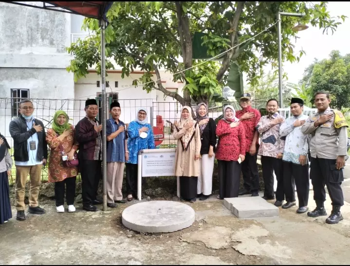
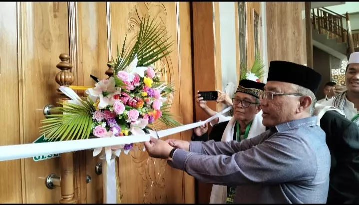
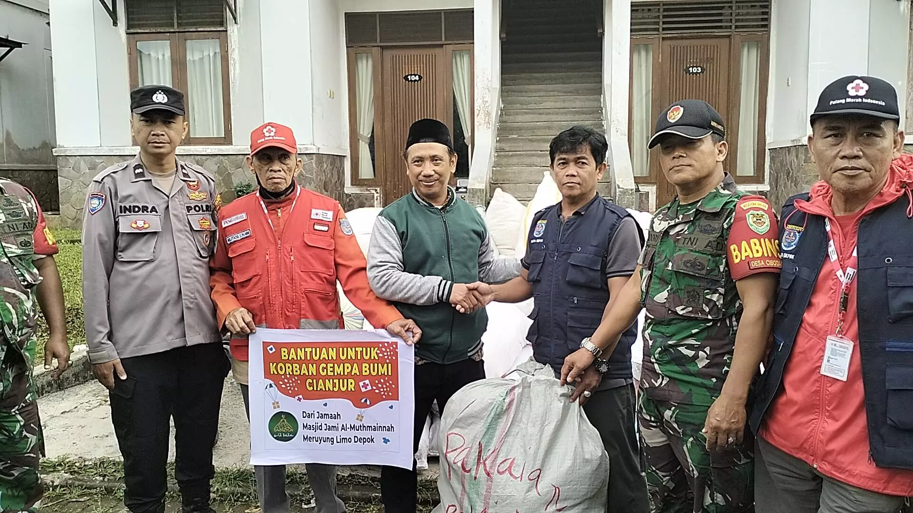
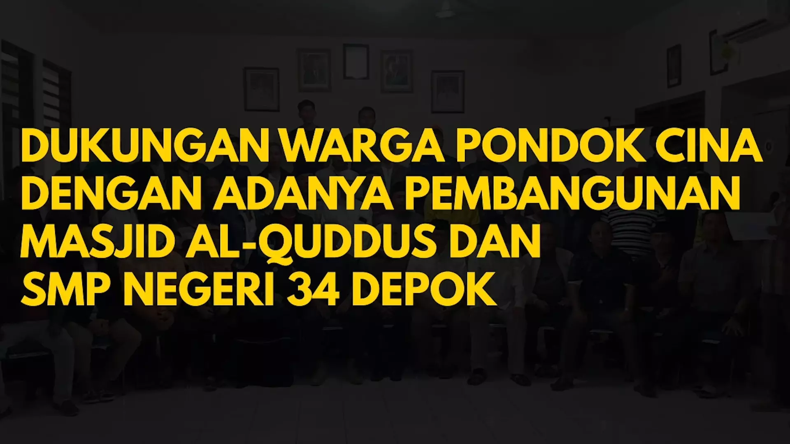
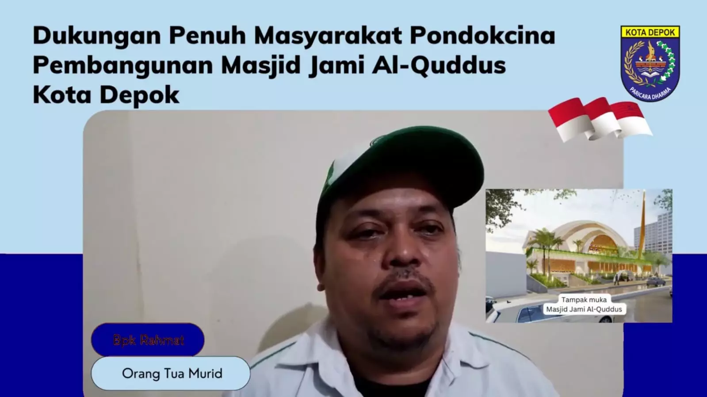
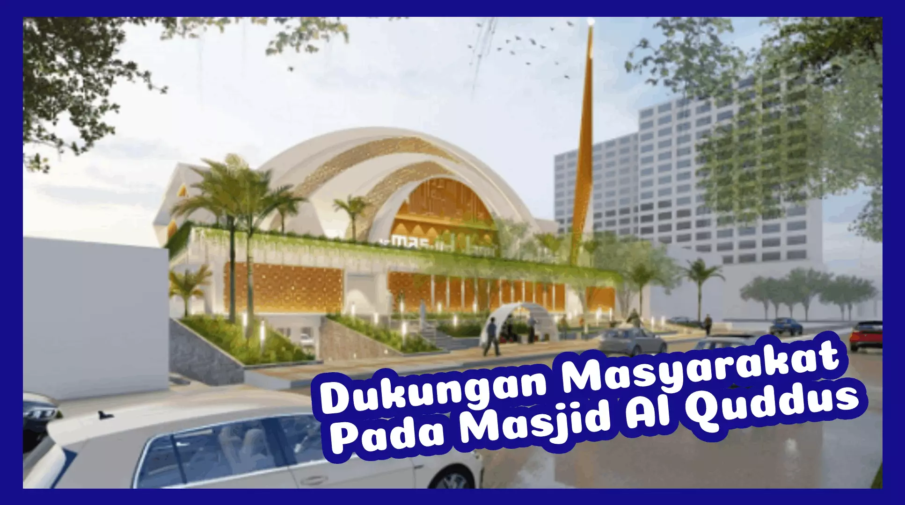

Berita Masjid
Berita Populer
Masjid Nurul Jannah yang berlokasi di
Sektor
Azalea, Kelurahan Jatimulya, Kecamatan Cilodong telah diresmikan Wali Kota
Depok... Selengkapnya
Wali Kota Depok, Mohammad Idris mengisi
Kuliah
Subuh pada pelaksanaan Kuliah Subuh Ahad Gabungan Akbar yang digelar
Pemerintah Kota... Selengkapnya
Wali Kota Depok, Mohammad Idris mengisi
Khutbah
Jumat di Masjid Al Husna Kampung Banjaran Pucung RT 001 RW 005 Kelurahan
Cilangkap..Selengkapnya
Dewan Kemakmuran Masjid (DKM) Masjid Nurul
Jannah dan warga Cluster Azalea Kelurahan Jatimulya menyambut baik hasil
rehabilitasi masjid..Selengkapnya
Masjid Nurul Jannah yang berlokasi di
Claster
Azalea, Kelurahan Jatimulya, Kecamatan Cilodong telah diresmikan Wali Kota
Depok...Selengkapnya
Lurah Cisalak, Rina Ekasari mengapresiasi
Tim Pengabdian Kepada
Masyarakat (PKM) Fakultas Arsitektur Lanskap dan
Teknol...Selengkapnya
Berita Terkini

Tim PKM Universitas Trisakti Selesaikan Pengabdian Masyarakat, Kenalkan Konsep Eco masjid
Selengkapnya

Wali Kota Depok Resmikan Masjid Al-Mukhlashiin di Sawangan
Selengkapnya

Tim Depok Peduli Gempa Cianjur Terima Bantuan dari Jemaah Masjid Jami Jami Al-Muthmainnah Meruyung
Selengkapnya

Video: Kata Warga Pocin Terkait Pembangunan Masjid Al Quddus dan SMP Negeri 34 Depok
Selengkapnya

Warga Pondok Cina Dukung Pembangunan Masjid Jami Al Quddus
Selengkapnya
